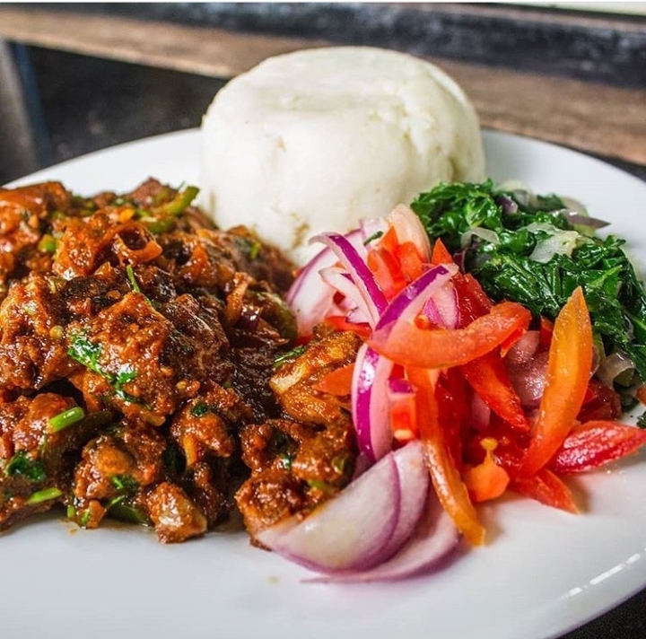

Ugali-Pork

Description
When you want to fight off the deep hunger, this is the meal for you.
It's popular in the streets and leaves you yearning for more at the same time getting you into a relieved slumber.
Ingredients
- Maize flour
- 1/2 kg Pork
- 2 Tomatoes
- 2 Onions
- 1 Chilli Pepper
- 1 Bell Pepper
Steps
- Add two cups of water to your pot and brig to boil.
- Add the maize flour while stirring until it gets firm
- Simmer for 5 minutes.
- Add the pork into a pot and add 100ml of water.
- Bring it to boil untill the water dries
- Add the cooking oil and stir for a minute
- Add the onions, the peppers and the tomatoes.
- Add salt, stir untill cooked
- Serve when hot.